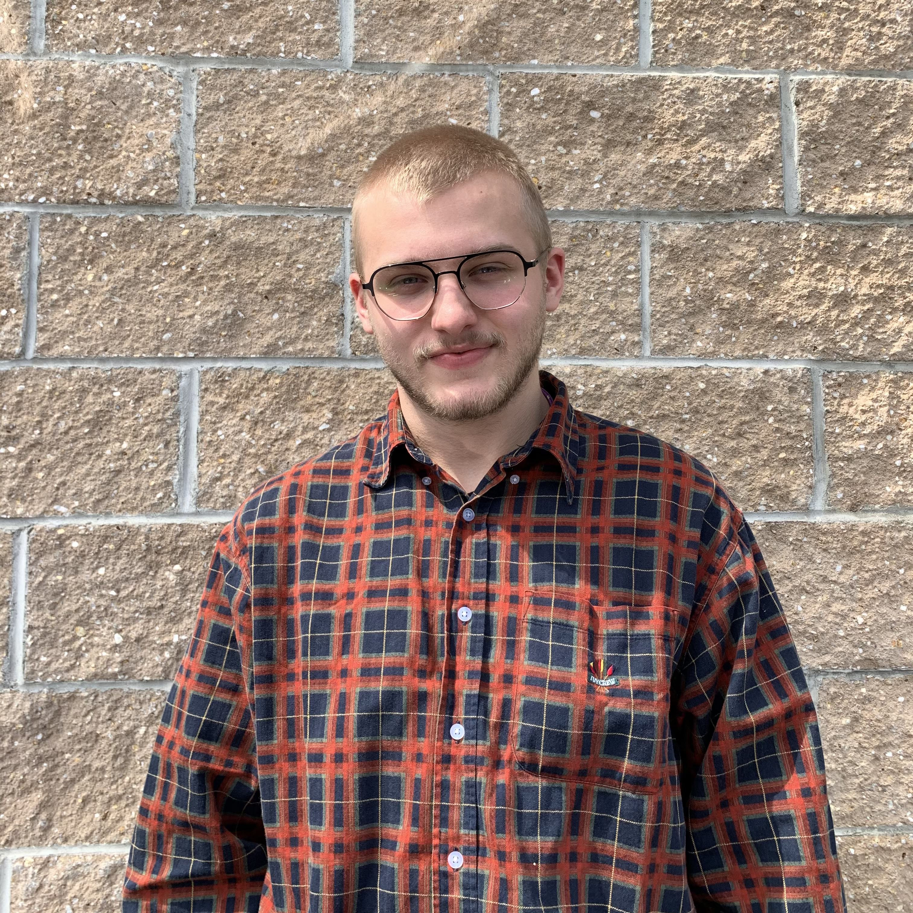
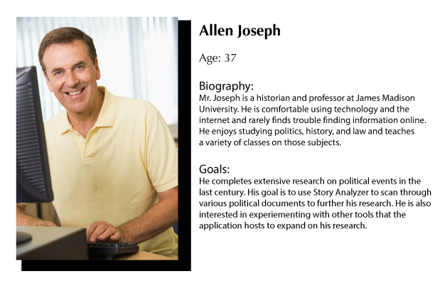
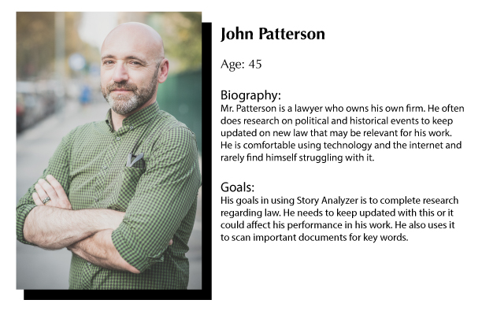
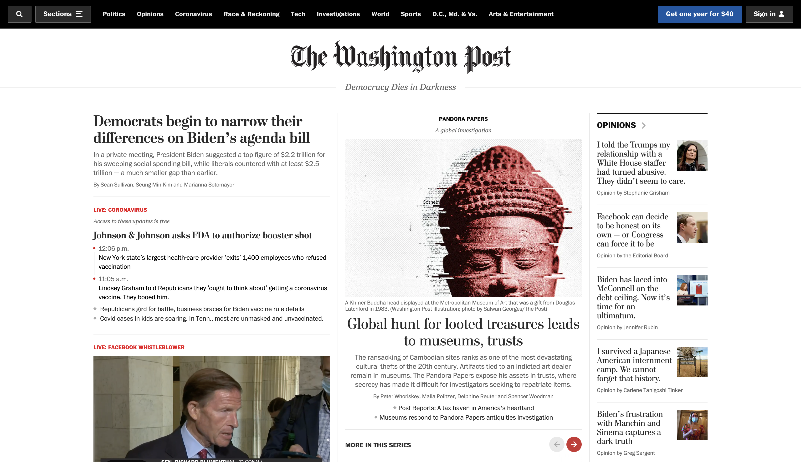
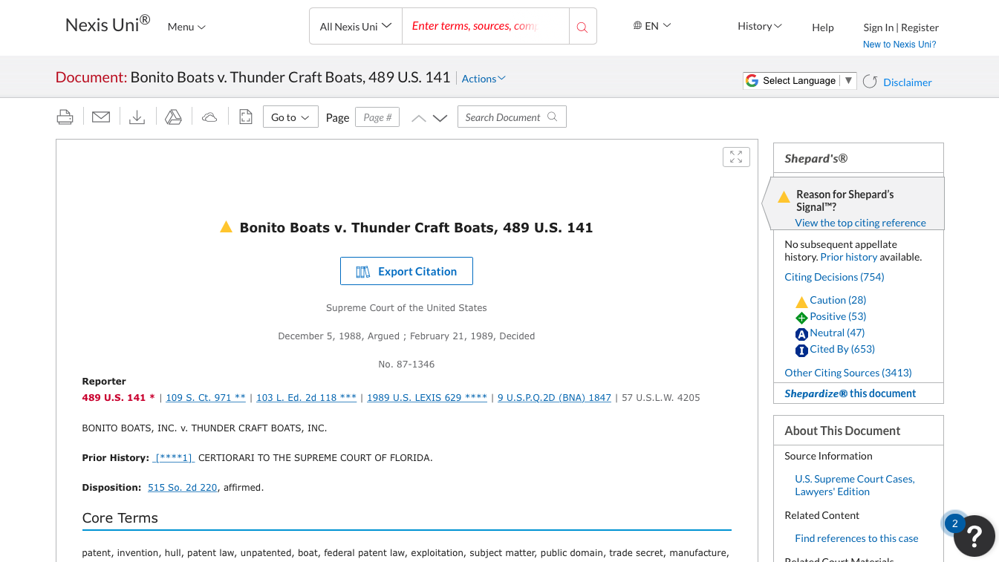
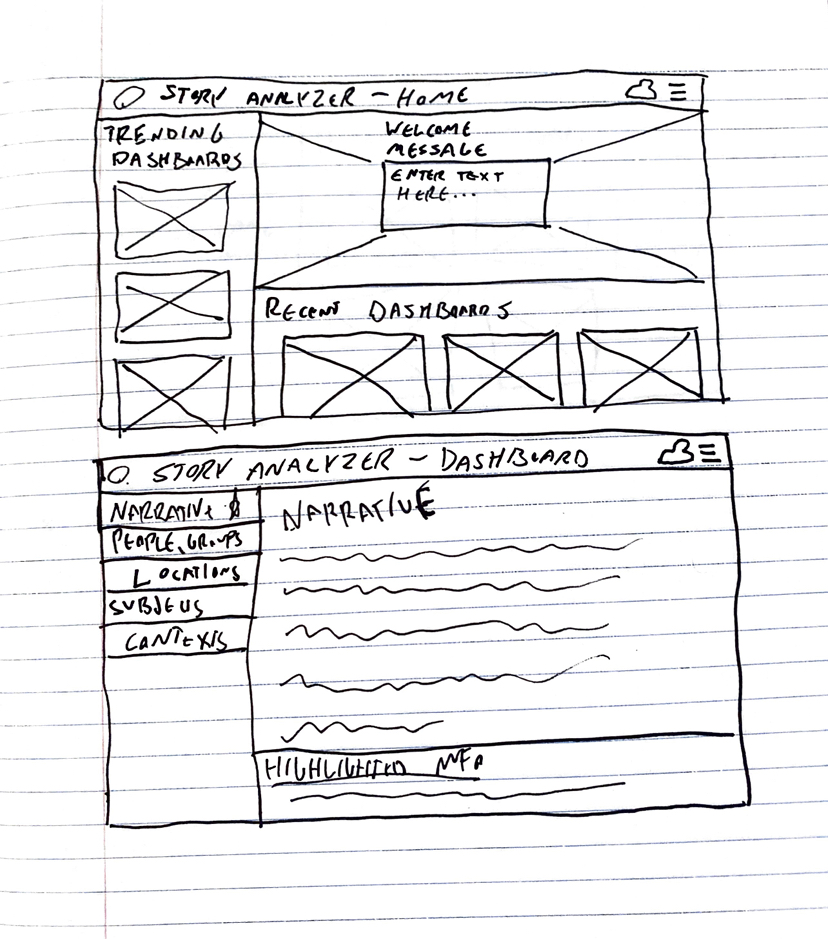
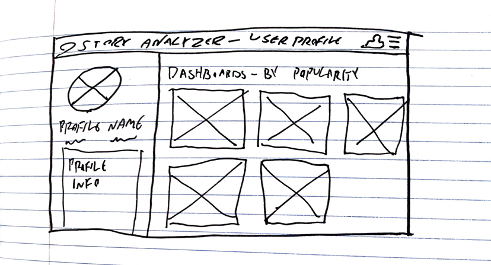
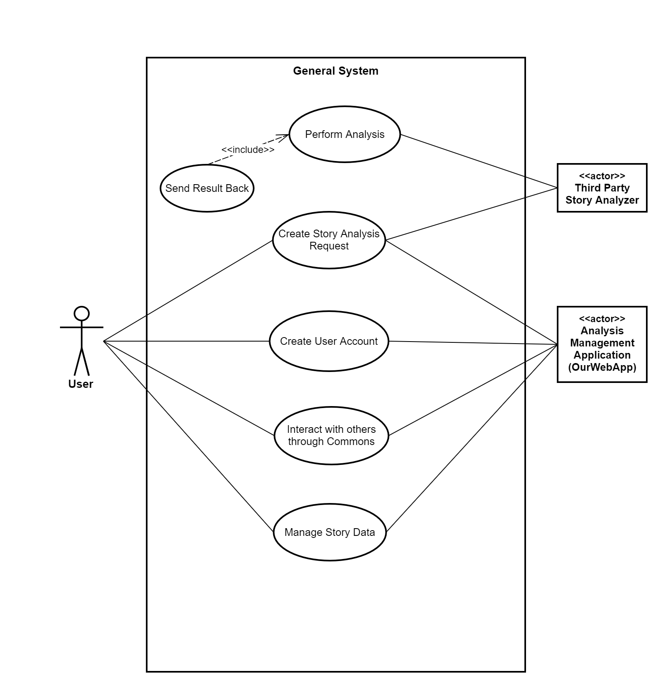
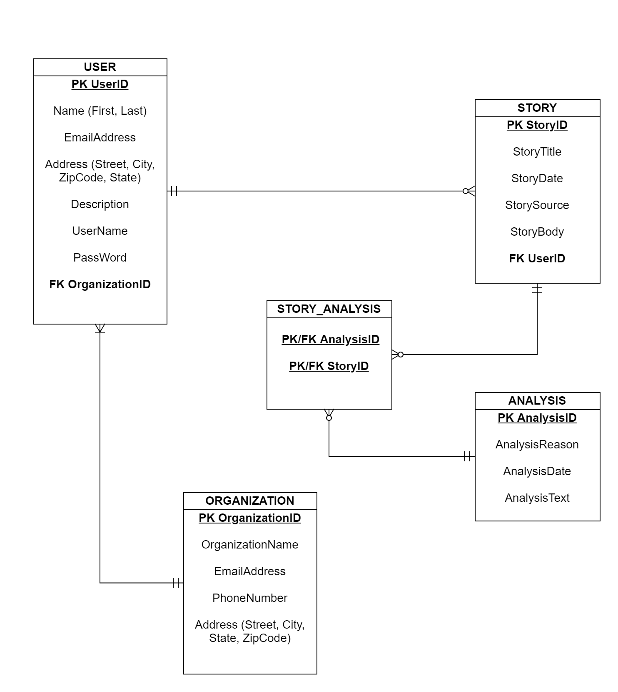
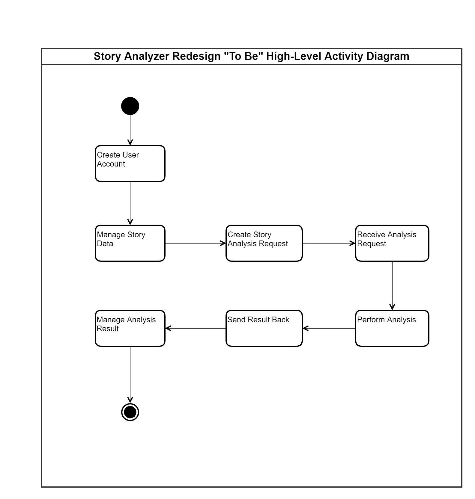

Story Analyzer Redesign
Team: Scrum Bucket
Team Members
Jacob Carter
SMAD Interactive Design (SMAD 408)
Expected Roles - Graphic Design, UX, Information Architecture, HTML/CSS
Biography - Jacob is a senior SMAD major with a concentration in Interactive Design. He’s the Opinion Editor for the Breeze, and has extensive experience in print design using Adobe InDesign and Illustrator.
Zach Greenbaum
SMAD Interactive Design (SMAD 408)
Expected Roles - Graphic Design, UX, Presentation, HTML/CSS
Biography - Zach is a senior SMAD major with a concentration in Interactive Design. He is interested in branding and web design. He is also a production assistant and technical director for Breeze TV.
Rita Yoham
SMAD Interactive Design (SMAD 404)
Expected Roles - UX Design, HTML/CSS/Bootstrap, and visual work
Biography - Rita is a SMAD major with a concentration in Interactive Design. She is interested in user experience design, interaction design, and front end coding. She is also the Creative Director of Advertising at The Breeze.
Theo Mott
System Development and Implementation (CIS 484)
Expected Roles - System Functionality
Biography - Theo Mott is a Senior Computer Information Systems Major at James Madison University. He works as a Fitness Manager at the University Recreation Center and after Graduation, he hopes to find a job as a Computer Systems Analyst.
Tofig Gasimov
System Development and Implementation (CIS 484)
Expected Roles - System Functionality
Biography - Tofig Gasimov is a Senior Computer Information Systems Major at James Madison University. He is interested in Database design and Implementation. After graduation, he hopes to find a job as a Database Manager/Assistant.
Christian Le
System Development and Implementation (CIS 484)
Expected Roles - System Functionality
Biography - Christian is a senior Computer Information Systems major planning to graduate this fall.He is interested in database management and system development. Post graduation, he is hoping to find a job as a systems analyst or anything within the information systems field.

Jacob Willis
System Development and Implementation (CIS 484)
Expected Roles - System Functionality
Biography - Jacob is a senior computer information systems major expecting to graduate in December. He is interested in cybersecurity and systems development. Outside of his classes he likes to participate in capture the flag competitions and hopes to find a job in cybersecurity upon graduation.
Zach Tillery
System Development and Implementation (CIS 484)
Expected Roles - Project Manager, and System Functionality
Biography - Zach is a double major in Finance and Computer Information Systems. He plans on graduating in spring of 2022. After graduation he would like to become a cyber security analyst or a system analyst working on system development and integration. He is also the Vice President of Financial Management Association, and Vice President of Club Dodgeball.
Overview
The overall goal of this project is to redesign and optimize both the front end and back end functions of Story Analyzer. On the front end side of the work, we will provide user research, personas, wireframes, visual mockups, bootstrap prototypes, and a newly designed dashboard for the product. On the back end, we will use various techniques to integrate our web application with the Story analyzer. We will also fully integrate database capabilities to our application while also handling threats such as sql injection and cross site scripting.
Major Project Goals
- Optimize usability based on user research.
- Restructure information architecture to be more user-friendly.
- Redesign visuals to modernize Story Analyzer and enhance professionalism.
- Successful database integration with Web application.
- Successful Story Analyzer Integration with Web application.
Obstacles/Potential Technical Issues
- Current front-end design is lacking.
- Little-to-no visual work has currently been done.
- Presentation of information needs to be cleaned up.
- Scope creep
- Time management
Audience/Personas
Target audience based on this persona: historians.
Target audience based on this persona: lawyers.
Timeline
Milestones:
- Conduct user tests
- Build prototypes
- Implement early visual design
Deliverables:
- Home Screen Prototype
- Information Dashboard Prototype
- User Page Prototype
Visual Samples
Sketches:
Early Story Analyzer Logo Concepts
Style: Minimalist, Studious, Professional
Possible Color Schemes: Red & Blue (politics), Purple & White (JMU, blend of red & blue)
Inspiration for Large Amounts of Text: News Websites (NYT, Washington Post), Nexis Uni
Washington Post Home Page:
Nexis Uni Document Page:
UX Research/Testing
Usability Test - Subject: Cole Ferrar
Task 1:
- Find and open the Mueller Report dashboard. (FAILED)
- Find and expand the “Verbs, Nouns, and Contexts” dropdown menu within the Mueller Report. (FAILED)
- Identify how many times the verb “interfere” is used within the Mueller Report. (FAILED)
Task 2:
- Find and open the “Trump vs. Biden Tweets” dashboard. (SUCCESSFUL)
- Determine the most commonly mentioned location within Donald Trump & Joe Biden’s tweet history. (SUCCESSFUL)
Focus Group
In one word, describe how the site makes you feel.
“Overwhelming”
“Annoying”
In what ways did the site meet or fail to meet your expectations in terms of functionality?
“Too many options to click on”
“Bad navigation”
How did the site’s visual aspects (color, typeface) affect your ability to digest information?
“No visual hierarchy”
UX Wireframes/Prototypes:
 System Planning/Documentation
  Project Management
Microsoft Teams, GitHub